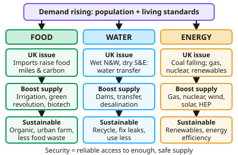

GCSE Geography · Topic 6
The challenge of resource management
The challenge of resource management is about supplying the world's growing need for food, water and energy.
We will look at global inequality in these resources and the idea of food, water and energy security.
Then we study the U K's supply and demand for food, water and energy, and ways to manage them sustainably.
- 5 subtopics
- 162 questions
- Free: 6.1 notes and 10 questions
In this topic
- 6.1Resource management: food, water and energyFree below · 38 questions
- 6.2UK food, water and energy: supply, demand, energy mix and a resource management case studyOpen in Full Marks · 49 questions
- 6.3Food in detail: food security, increasing supply and sustainable foodOpen in Full Marks · 27 questions
- 6.4Water in detail: water security, increasing supply and sustainable waterOpen in Full Marks · 25 questions
- 6.5Energy in detail: energy security, increasing supply and sustainable energyOpen in Full Marks · 23 questions
6.1 · Free notes
Resource management: food, water and energy

Key points
- Food, water and energy are fundamental to human development; global demand is rising due to population growth and rising living standards.
- In the UK: growing demand for imported and seasonal food raises food miles and carbon footprint; demand for water differs from supply areas, requiring water transfer; the energy mix is shifting from coal towards gas, nuclear and renewables.
- Food security means reliable access to enough safe, nutritious food. Insecurity causes famine, undernutrition, soil erosion, rising prices and social unrest.
- Increasing food supply: irrigation, aeroponics and hydroponics, the green revolution, biotechnology and new areas of land. Sustainable approaches include organic farming, permaculture, urban farming and reducing food waste.
- Water security strategies include dams and reservoirs, water transfer and desalination; sustainable supply uses conservation, groundwater management, recycling and 'grey' water.
- Energy security strategies include exploring new fossil fuel reserves, nuclear power and renewables, alongside efficiency and conservation.
In more detail
- Hunger: the UN estimates that around 700 million people faced hunger in 2023.
- Water stress: a country is water stressed when supply falls below about 1700 m³ per person per year.
- Energy demand: global demand keeps rising with population and development, led by countries such as China and India.
- Green Revolution: high-yield seeds, fertilisers and irrigation roughly doubled India's grain yields from the 1960s, but needed lots of water, chemicals and money.
- Water transfer: the Lesotho Highlands Water Project sends water to South Africa, earning Lesotho income.
Practice
Resource management: food, water and energy: 10 questions
Pick an answer to check it, or open the answer for the explanation.
1. What is food security?
- Growing only local food
- Reliable access to enough safe, nutritious food
- Having food banks
- Exporting surplus food
Show answer
B: Reliable access to enough safe, nutritious food. It involves availability, access and stability of supply.
2. What are food miles?
- The distance food travels from producer to consumer
- The number of meals eaten
- The size of a farm
- The weight of food imported
Show answer
A: The distance food travels from producer to consumer. Longer distances usually mean a larger carbon footprint.
3. Why does the UK need water transfer schemes?
- Water is evenly distributed
- Areas of high demand differ from areas of high supply
- There is too much water everywhere
- Rainfall is the same across the country
Show answer
B: Areas of high demand differ from areas of high supply. The wetter north and west supply the drier, more populated south and east.
4. Which is a sustainable way to increase food supply?
- Clearing rainforest for farmland
- Organic farming, permaculture and reducing food waste
- Unlimited irrigation from aquifers
- Intensive chemical use
Show answer
B: Organic farming, permaculture and reducing food waste. Sustainable methods maintain productivity for the future.
5. What is desalination?
- Removing salt from seawater to produce fresh water
- Adding minerals to water
- Transferring water between regions
- Storing rainwater
Show answer
A: Removing salt from seawater to produce fresh water. It is effective but energy-intensive and expensive.
6. Why might a country choose to build a dam as part of water management?
- To increase drought
- To store water and generate hydroelectric power
- To reduce electricity supply
- To stop all rainfall
Show answer
B: To store water and generate hydroelectric power. Dams provide a reliable water and energy supply, though they carry other costs.
7. Why is global demand for food, water and energy rising?
- Population growth and rising living standards
- Reduced international trade
- Falling global populations and cheaper technology
- Fewer people living in cities
Show answer
A: Population growth and rising living standards. More people, and higher incomes that raise consumption per person, increase demand. Populations are not falling globally.
8. A UK supermarket sells strawberries in December flown from abroad. Which problem does this mainly increase?
- Carbon footprint of food
- Local soil fertility
- Rural population density
- UK water supply
Show answer
A: Carbon footprint of food. Out-of-season imports travel long distances, often by air, raising transport emissions and so the carbon footprint.
9. Which change is occurring in the UK energy mix?
- Shift from coal towards gas, nuclear and renewables
- Coal use is rising rapidly
- Shift from renewables towards coal
- Gas has been fully replaced by nuclear
Show answer
A: Shift from coal towards gas, nuclear and renewables. UK coal use has fallen sharply, with gas, nuclear and renewables (especially wind) providing more of the electricity.
10. A country has 8 million tonnes of grain but needs 10 million tonnes. What percentage of its need is met?
- 8%
- 125%
- 20%
- 80%
Show answer
D: 80%. 8 ÷ 10 × 100 = 80%. A 2 million tonne shortfall is 20% of need, which is the tempting wrong answer.
Keep going in Full Marks
Full Marks has 38 questions on Resource management: food, water and energy (28 more than here), set out in practice levels. You also get notes and 3D models for all 5 subtopics of The challenge of resource management, plus games, timed exams and past papers.